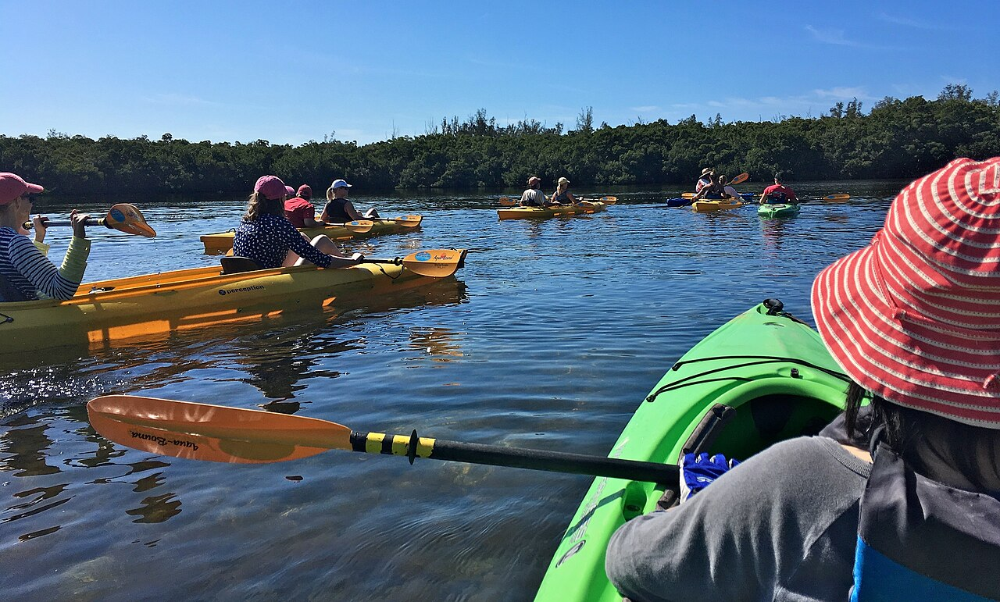
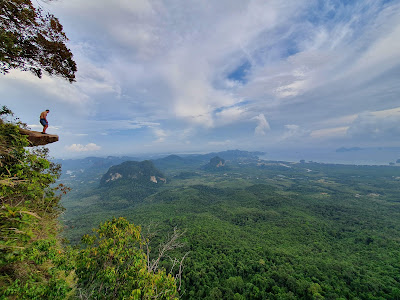
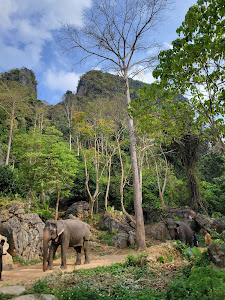
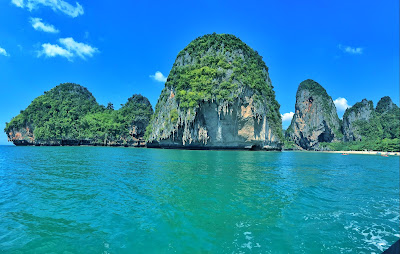
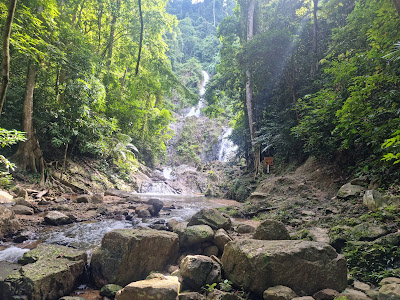
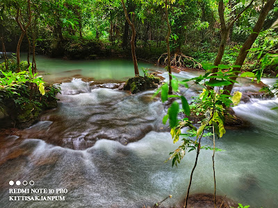
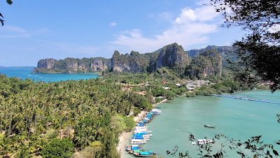
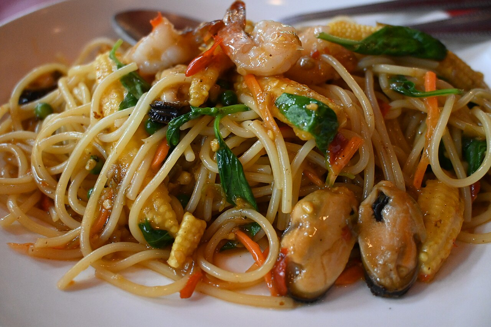

8/1 六
抵达日 · 傍晚超低潮
低潮18:23 · 0.2m（全周最低）高潮11:45 · 2.7m
🌅 18:00–18:40 落日金光赶海，别墅门口捡贝壳礁石
2大 + 毛豆(10) + 2老人 · 住 Mangrove Bay Beachfront Villa（8/1–8/8，Hertz 自驾）· 8/8 飞曼谷停 2 晚正好赶恰图恰周末市集 · 8/10 素万那普返京。评分与点评数来自 TripAdvisor 实时抓取，Google Maps 交叉印证，Trip.com 实时房价。
这次做低密度 Villa staycation：大活动只硬排 3 天（翡翠池+温泉 / 洪岛 / Railay 攀岩）+ 1 天漂流，其余靠潮汐窗口穿插「赶海（低潮）」和「皮划艇（高潮）」，各安排 ≥3 次，中间给老人留放松日。曼谷段卡在 8/8–8/9 周六日，正好赶上只在周末开的 恰图恰周末市集（JJ Market）。
⚠️ 8 月是绿季/雨季：海岛看天气窗口，洪岛/攀岩当天再确认；夜市带伞。图片均为站内已下载的开放来源，不热链 TripAdvisor 版权图。
赶海 👣看最低潮前后（水位 0.2–0.9m，礁石找生物）· 皮划艇 🛶看高潮（2.3–2.7m，别墅出发划行）。均尽量安排在白天。
赶海 ≥3：8/1 夕阳(0.2m 神级) · 8/4 早 · 8/8 中午。 皮划艇 ≥3：8/2 · 8/4 · 8/7。
09:00 落地甲米 → 取车自驾去 Mangrove Bay 别墅（约 30–40 分）。红眼很累，下午睡觉/泡别墅。
赶海 #118:23 全周最低 0.2m 落日赶海。晚饭别墅附近。
🥾 清晨 07:00 出发自驾 Nong Thale（约30分）走 Dragon's Crest / Ngon Nak 龙脊（往返3.7km，3–4h，TA 4.8），沿途认天南星科 + Hoya（见植物 tips）；老人可只走前段平缓林道。中午回别墅。
皮划艇 #112:16 高潮（体力若够）。傍晚自驾 Krabi Town 逛 Walking Street 周末夜市（周五–日）。
08:00 出发（车程约 1h15）→ 翡翠池 Sa Morakot 游泳浸泡 → 午餐 → 下午 Namtok Ron 温泉（暖流河，老人极舒服）。满日，不加夜市。
赶海 #207:50 清晨礁石。上午泳池午睡。皮划艇 #213:26。晚餐清淡在家。
建议跟团/包长尾船（有老人和娃，别自助）；从 Nopparat Thara 码头出发更近。翡翠泻湖 + 白沙滩；国家公园费约 200฿/成人。⚠️ 绿季水母偏多，带防护衣；看天气再定。
上午奥南沙滩东端坐长尾船 10–15 分到 Railay（约 100–200฿/人）。North Wall 初级攀岩半日课（约 1500–2000฿/人含装备）——健康的 10 岁男孩很合适，老人东海滩咖啡厅等。傍晚 Ao Nang Night Market（周四–六）。
上午 Khlong Thom 竹筏漂流（平缓热泉河，全年龄安全，约 500–700฿/人）。皮划艇 #316:42 别墅收尾。傍晚可再逛 Krabi Walking Street（周五）。
赶海 #313:08 中午最后捡矿物/贝壳。午餐 → 收拾 → 约 16:00 还车到甲米机场 → 18:50 甲米→曼谷廊曼。

全程只安排一次，避免雨季天天赌海况。

健康的 10 岁男孩很合适；Hot Rock / Real Rocks 5.0/4.8。

翡翠绿热泉游泳 + Namtok Ron 温泉暖河。

White Water Rafting & Waterfall Tour 4.6；红树林皮划艇 4.8。

体力好的机动选项，老人可跳过。

喂食/泥浴，机动加分项。

Railay View Point 4.5(1,279) 可加。
集中一次解决夜市 + 补给。
甲米是石灰岩喀斯特雨林，登山道两侧潮湿岩壁和树冠层正是天南星科（Araceae）和球兰属（Hoya）等热带附生植物的天堂。硬排 1 次 Dragon's Crest 给毛豆放电+认植物，另备 3 条不同强度线按天气/体力挑。⚠️ 均在国家公园/自然保护区内，只观察拍照、不采挖（见下方植物 tips）。
清晨 7:30 前上山避热避人；沿途树干看 Hoya、岩壁看天南星科。老人可只走前段平缓林道。

常绿雨林最湿润，溪边岩石和倒木上天南星科（芋属/崖角藤）最集中；平缓好走。

石灰岩壁挂满附生植物，栈道好走无强爬升，最适合老人同行认植物。

攀岩日给毛豆加练；崖壁缝隙常见天南星科小型种，泥泞湿滑穿抓地鞋。
把毛豆的「挖矿/采集」癖好升级成热带植物博物课：不采挖、只做「观察 + 拍照 + 记录」，重点认两大类群——潮湿岩壁地面的天南星科和树冠层的球兰属 Hoya。
喜阴湿：溪谷、瀑布边、石灰岩壁根部、腐木上。甲米常见——崖角藤属（Rhaphidophora，攀爬裂叶）、麒麟叶（Epipremnum）、芋属（Colocasia/Alocasia 巨型心形叶）、石柑属（Pothos）。Huay To 瀑布 + Than Bok 栈道命中率最高。看到肉穗花序+佛焰苞就是天南星科。
附生藤本，爱阳光斑驳的树干、大枝、岩石缝——抬头看树冠层和林缘。特征：成对肉质叶 + 星形蜡质伞形花（花期常有甜香）。Dragon's Crest 中上段树冠、Railay 崖壁缝隙留意。清晨或雨后花最鲜。
给毛豆备：手持放大镜/微距夹（手机）、小卷尺、笔记本、iNaturalist/Seek App（拍照即时 AI 识种、还能上传做公民科学）。教他记 GPS点位+生境+寄主树，回来建「甲米热带植物库」，和他的矿物库一个玩法。
① 不采挖：国家公园/保护区内采集植物违法，Hoya 多为受保护/CITES 关注类群，出入境更严——只拍不带。
② 别徒手摸：天南星科汁液含草酸钙针晶，触碰破损处会刺痒灼痛，看就好。
③ 防蚊蚂蟥+蛇：穿长裤浅色衣、驱蚊液，湿季雨林尤其注意落脚。
玩法建议：把「认 5 种天南星科 + 找到 1 株开花 Hoya」设成毛豆的徒步任务卡，完成即解锁夜市小奖励——契合他 RPG 式收集偏好。




一家老小首选：Kodam Kitchen（4045 条口碑）· Red Chili（4.9 便宜）· Ra Beung Lay（海鲜泰）· Ton Ma Yom（平价泰）。Red Chili / Jungle Kitchen 暂用泰式海鲜通用图。
首选住 Mo Chit / Chatuchak 一线，出地铁即市场，老人省折腾。以下为 Trip.com 实时房价（2 晚含税、可住 5 人房型；keyword 漂到 Sukhumvit，作价格档参考，订前按 Mo Chit 重搜）。
| 酒店 | 评分 | 2 晚总价 | 位置 / 房型 |
|---|---|---|---|
| Ramada by Wyndham Sukhumvit 87 | 8.6 (1,292) | $338 −20% | On Nut 地铁 · Duplex Family Suite 住 5 · 性价比首选 |
| Grand China Bangkok | — (1,072) | $270 | 唐人街 · 观光方便 |
| Ascott Sathorn Bangkok（2 房公寓） | 9.1 (607) | $594 | Sathorn · 2 卧住 5 · 适合多代 |
| Centre Point Sukhumvit Thong-Lo | — (205) | $480 | Thonglor · 服务式公寓 |
| Centara Grand @ Central Plaza Ladprao | 4.5★5 Maps | 待查家庭房 | 位置最优 · 直连 Mo Chit BTS / Chatuchak MRT + 商场 |
2 日行程：8/9 日上午恰图恰周末市集（每 30–40 分找座位歇脚）→ 午后 ICONSIAM 河畔商场（空调）或 Lumphini 公园（看巨蜥，毛豆爱）；8/10 一早上 Wat Benchamabophit 大理石寺（好走）→ 中午退房 → 去素万那普赶 18:20（留 3h 防堵）。
🔵 餐厅/活动评分 · 点评数 = TripAdvisor 实时抓取（Ao Nang Attractions / Restaurants 页，2026）；🟢 部分餐厅 Google Maps 交叉印证；🟡 曼谷房价 = Trip.com 实时（8/8–8/10，5 人房型，含税）；🌊 潮汐 = tides4fishing（奥南站）。图片均为本仓库已下载的开放/可复用来源（见 ATTRIBUTION.md），不热链 TripAdvisor 版权图。Wongnai/大众点评对甲米海外乡村无有效覆盖，故未采用。